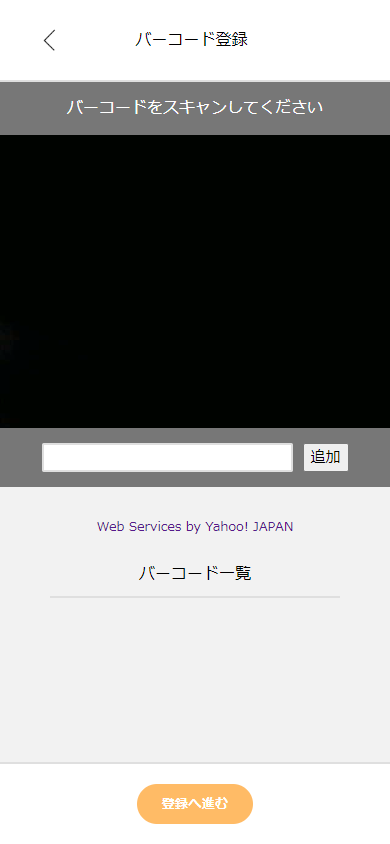
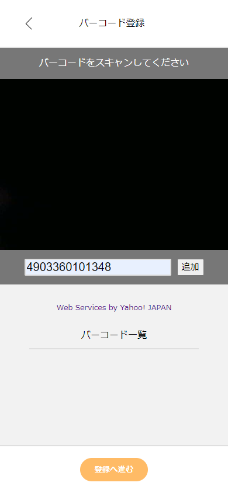
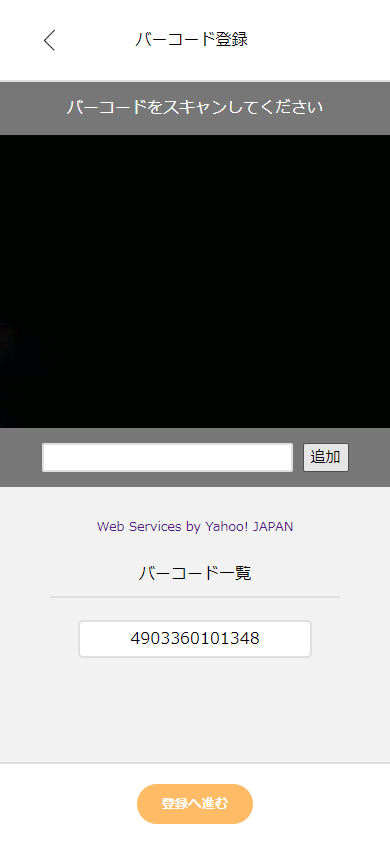
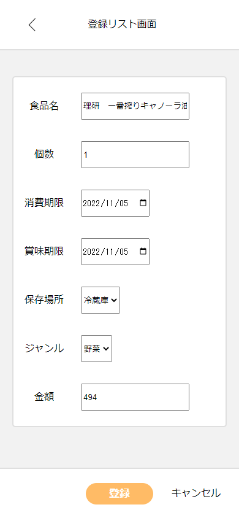

バーコードで食品を登録する

１．バーコード登録画面に移動すると、カメラが起動します。

２．カメラにバーコードをかざすと、下のフォームにJANコード（バーコード情報）が入力されます。

３．フォームの右にある「追加」ボタンを押すと、バーコード一覧にJANコードが登録されます。 登録したいバーコードを追加し終えたら、「登録へ進む」ボタンを押します。

４．登録リスト画面に移動すると、先ほど追加したJANコードに対応する食品の情報が表示されます。 個数や賞味期限、金額など変更したい値を入力フォームから変更します。値の変更をし終えたら 「登録」ボタンを押して食品の登録を完了させます。